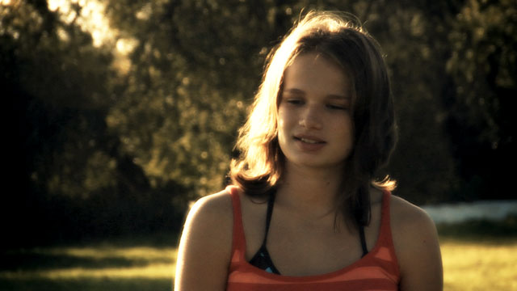

The Balaton Monks

2008
Woods Hole Film Festival (RI)
Flickerings @ Cornerstone Festival (Bushnell, IL)
DC Shorts Film Festival (Washington, DC)
The Other Venice Film Festival (Venice, CA)
Film Pop (Montreal, Canada)
Three Rivers Film Festival (Pittsburgh, PA)
2009
Beloit International Film Festival (WI)
©2008 Nine Tints Pictures